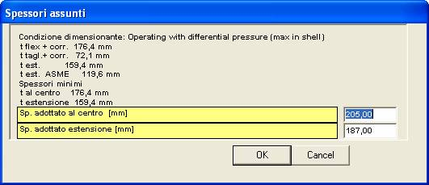

Calcolo di P.T./fasci tubieri
Fasci tubieri a teste fisse
A seguito della pressione del pulsante 'Calcola' compare una finestra come la seguente.

Dall'osservazione dell'esempio sopra riportato si può desumere che il caso in esame comporta due condizioni di carico e che il fascio non è dotato di dilatatore. Inoltre l'intestazione della finestra denuncia che sarà eseguito un calcolo in accordo all'App. AA del codice ASME.
Per vedere i risultati del calcolo è necessario esaminare le diverse schede presenti nella finestra.
Le schede Dati n
Un esempio di questa scheda è riportato all'inizio del capitolo; ne esiste una per ciascuna condizione di carico. Il tipo e la quantità dei dati visualizzati su queste schede possono variare in funzione della configurazione del fascio tubiero, come definita nei dati Piastra Tubiera. La seguente è una lista completa.
Condizione
Come visto nel capitolo sui dati di progetto, il numero di condizioni di carico può essere al massimo di otto. Per ciascuna di esse si assegna qui la relativa designazione. Come già detto nel soprariportato riferimento, è buona prassi che la prima delle condizioni di carico coincida con le condizioni di progetto.
Numero di eventi
Il numero di eventi rappresenta il numero di volte che si prevede si presenti la condizione in questione durante la vita dell'apparecchio. Questo dato è necessario per effettuare l'analisi a fatica del dilatatore.
Non si deve confondere il numero di eventi con il numero di cicli. I cicli possono essere visti come una successione di condizioni che parte da un determinato stato dell'apparecchio (per esempio la condizione "scarico a temperatura ambiente") e ritorna allo stato iniziale. L'operazione di codensazione degli eventi in macrocicli è eseguita automaticamente dal programma a partire dai dati qui forniti.
Pressione lato mantello
Presssione lato tubi
Pressione differenziale
Normalmente questo dato va lasciato pari a zero. Vedi nota.
Temperatura della piastra tubiera
Temperatura del mantello
Temperatura dei tubi
Tensione ammissibile nel mantello
Tensione ammissibile nei tubi
Tensione ammissibile nella piastra tubiera
Tensione ammissibile nel dilatatore
Momento al serraggio applicato alla perifieria della piastra tubiera
Momento in esercizio applicato alla periferia della piastra tubiera
Modulo elastico del mantello
Modulo elastico dei tubi
Coefficiente di dilatazione termica del mantello
Coefficiente di dilatazione termica dei tubi
Modulo elastico della piastra
Limite elastico del materiale dei tubi
Carico ammissibile sul giunto
Questo dato viene calcolato secondo i criteri specificati dall'App. A
Limite elastico del materiale del dilatatore
Ammissibile a compressione del mantello in condizioni nuove
Ammissibile a compressione del mantello in condizioni corrose
Costante elastica del dilatatore in condizioni nuove
Costante elastica del dilatatore in condizioni corrose
Temperatura della piastra di coda
Limite elastico del materiale del dilatatore
Tensione ammissibile nella piastra di coda
Modulo elastico della piastra di coda
Momento al serraggio applicato alla periferia della piastra tubiera di coda
Momento in esercizio applicato alla periferia della piastra tubiera di coda
Elongazione imposta al dilatatore
Tensione ammissibile nei rinforzi del collare
Tensione ammissibile negli anelli di rinforzo
Modulo elastico del materiale degli anelli di rinforzo
Tensione ammissibile nei tiranti di chiusura degli anelli
Modulo elastico del materiale dei suddetti tiranti
La maggior parte delle caselle dati è affiancata dal pulsantino  , premendo il quale si lancia una
procedura di calcolo del dato in questione a partire da altri dati disponibili
al programma, o in base ai dati della libreria materiali. Il pulsante
, premendo il quale si lancia una
procedura di calcolo del dato in questione a partire da altri dati disponibili
al programma, o in base ai dati della libreria materiali. Il pulsante
 permette di lanciare
l'aggiornamento automatico di tutti i dati: esso è quindi equivalente alla
pressione in sequenza di tutti i pulsantini.
permette di lanciare
l'aggiornamento automatico di tutti i dati: esso è quindi equivalente alla
pressione in sequenza di tutti i pulsantini.
La scheda Sintesi
Le schede Piastra n
Le schede Mant. n
Le schede Dilat. n
Piastre tubiere per tubi ad U senza estensione flangiata
A seguito della pressione del pulsante 'Calcola' compare una finestra come la seguente, nella quale compaiono già i risultati del calcolo.

Piastre tubiere per tubi ad U con estensione flangiata
A seguito della pressione del pulsante 'Calcola' compare una finestra come la seguente, nella quale compaiono già i risultati del calcolo.

La condizione dimensionante è determinata dal programma fra quelle studiate (operating shell-side, tube-side o differential, seating) e applicabili al caso in esame.
Vengono quindi riportati i valori minimi richiesti per lo spessore a flessione (centro piastra) a taglio (in periferia) e dell’estensione.
Per l’estensione vengono riportati due valori. Il primo è lo spessore assunto nel calcolo del momento iperstatico M* secondo RCB-7.1342. Il secondo, detto ASME, tiene conto della formula UG-34 (c)(2)(2) nella quale si ponga P=0.
Qualora sia stata richiesta l’esecuzione commentata verrà prima presentata una serie di grafici informativi del processo di ottimizzazione spessore piastra/spessore estensione.